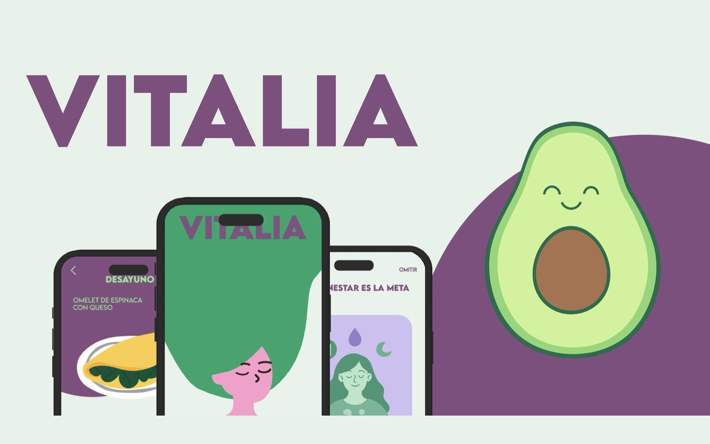
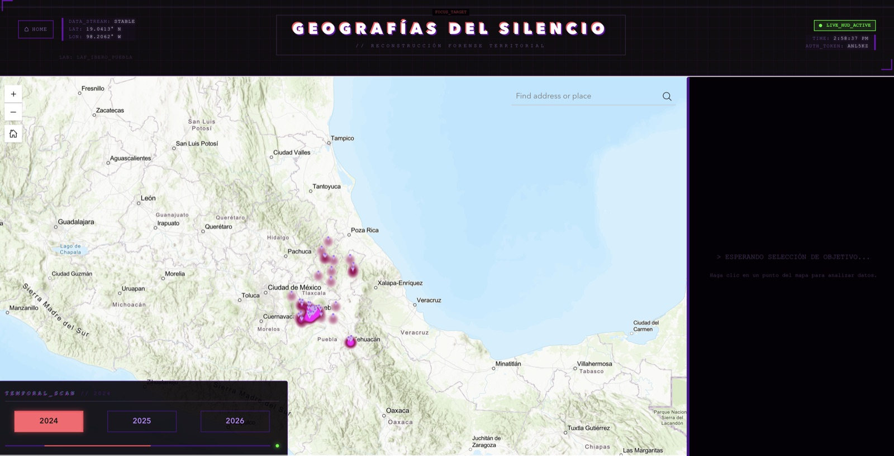
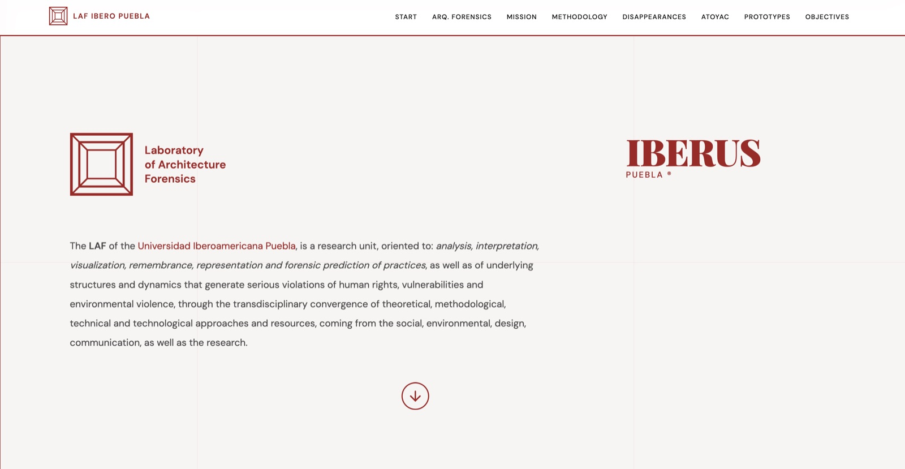
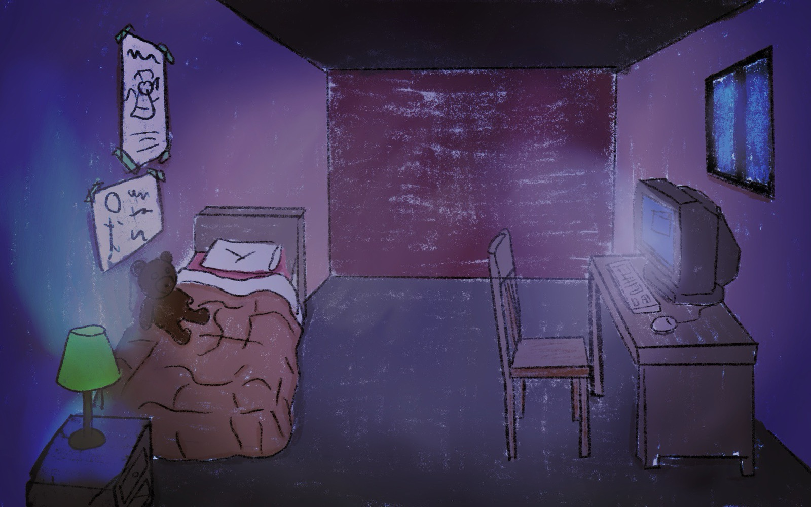

Hi, I'm Sarai Rosas.
I design interactive systems and build them in Swift, Unreal Engine and the browser. Interaction design, UI/UX and data visualization, based in Puebla, Mexico.
View My Work Download CVSelected Work

VITALIA: Health & Wellness App
A functional iOS app built around one deliberate product decision: replacing calorie-counting pressure with habit tracking and emotional journaling. Covers onboarding with a personalized assessment, macro and hydration dashboards, sleep logging, recipes and guided breathing.

Echoes of the Past, Voices of the Present
A first-person puzzle game on gender inequality in Mexico. Each room maps a different sphere of life (domestic, media, education, politics) to an interactive challenge, closing with a memorial hall of Mexican pioneers and a puzzle that assembles the legislative wins they made possible.

Femicide Cartography
A custom web interface built for the Forensic Architecture Laboratory to document and visualize data on femicide in Mexico, turning forensic research into a cartographic narrative anyone can read.

The LAF Dashboard
Systematization and qualitative analysis of participatory mapping data at IBERO Puebla, translating citizen narratives into structured information layers for social urbanism research.

In productionRESOURCE: Analog Horror Game
A first-person analog horror game built with 2D assets in a 3D space, currently in final development. Concept, art direction and in-engine implementation.
About Me
I'm an interaction designer who takes products from concept to working build. That means a native iOS app in Swift, an interactive web interface, or an immersive environment in Unreal Engine, whichever the problem actually calls for.
Much of my work sits where social research meets interaction design: turning complex data and field research into interfaces and cartographic narratives people can navigate. I studied Interaction Design and Animation at Universidad Iberoamericana Puebla, and spent a year at Volkswagen Financial Services building corporate identity assets and holding global brand standards across multiple automotive brands.
My toolkit spans Swift, HTML, CSS, JavaScript and ArcGIS Experience Builder, alongside Unity, Unreal Engine and the Adobe suite. I work in Spanish, English and German.
Skills
- UI/UX Design & Testing
- Mobile Product Design (iOS / Swift)
- Data & Spatial Visualization
- Interactive Systems Design
- 3D Modeling & Real-Time Environments
- Serious Games & Game Design
- AI-Assisted Design & Workflows
Get In Touch
Based in Puebla, Mexico. Open to remote work and relocation. If you're building something interactive and want a designer who can also ship it, let's talk.